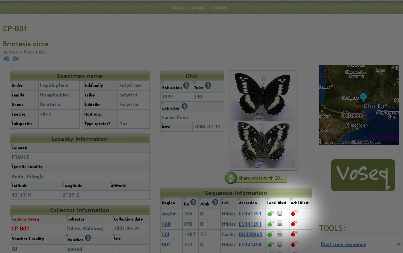

Plugins¶
Yahoo! Maps plugin¶
VoSeq is able to interact with Yahoo! Maps to create on-the-fly maps for vouchers when geographic coordinates are present in voucher pages.
After installing VoSeq, you can enable this capability by getting a Yahoo! Maps API key from them and writing them in your conf.php file:
Get an API key from http://developer.yahoo.com/maps/simple/
After filling in the required information you will be given a Consumer Key consisting of a long string of seemingly random characters that end with two dashes:
MwRGV2Jm1zbWNHbmnM9Y2Q9WVdrOVVHdj0yzlNQS0tJ9uc3VtZXJzZWNyZXQmeD1iMw--
Remove the two dashes from the end and copy your key into the
conf.phpfile as a value for the variable$yahoo_key. Like the example below, including quotations and semicolon:$yahoo_key = "MwRGV2Jm1zbWNHbmnM9Y2Q9WVdrOVVHdj0yzlNQS0tJ9uc3VtZXJzZWNyZXQmeD1iMw";
Save the file and exit.
After doing this, VoSeq will be able to pull maps from Yahoo! whenever there is geographic information in your database. Note that you need to enter the geographic coordinates into VoSeq converted into decimal format, using the sign minus for the Southern and Western hemispheres.
Flickr plugin¶
VoSeq hosts all the specimen photos in Flickr. If you have a free account you can host up to 200 photos. The Pro account allows you hosting unlimited number of photos for a yearly fee (25 USD).
You need to get an API key from Flickr.
Create and account in Flickr (if you don’t own one already)
Follow the instructions to get an API key, Secret key and Token key.
After submitting you will get your Key, Secret and Token. Write down those keys.
From a text editor software, edit the file
conf.phpby copying your keys in it.For example [these are not real keys and will not work if you use them]:
$flickr_api_key = "2d7f59f9aaa2d5c0a2782d7f5d9083a6";$flickr_api_secret = "ef0def0f3d5f3f15f1";$flickr_api_token = "61607157718372495-f5524ead33b43129";
Save and exit.
Thus, every picture that you upload into your VoSeq installation will be uploaded into your Flickr account.
Note
You can share your voucher photos with the Encyclopedia or Life. Sharing Photos with EOL
BLAST plugin¶
VoSeq has BLAST capabilities.
You can search for homologous sequences of your markers in GenBank. If you have a VoSeq installation in your work computer (or your server provider allows you to run the BLAST executable files), you do local BLASTs. For example, BLAST any or your sequences against all sequences of the same gene, or against all your sequences (full BLAST). Click on the “BLAST” icons in your voucher’s pages:
{kind=link}
You can also copy and paste any new sequence into VoSeq’s Blast new sequence tool and see whether there are any similar sequence in your data (this tool is located on the sidebar on the right).
Remember that you need to download from NCBI the stand alone BLAST executable files and copy/install them in one of VoSeq’s folders:
In Mac OS X: when you install from the .DMG package, the executable files will be written in the folder:
/usr/local/ncbi/blast/bin. You just need to copy them to the right folder in VoSeq:mkdir ~/Sites/VoSeq/blast/bincp /usr/local/ncbi/blast/bin/* ~/Sites/VoSeq/blast/bin/.
In Linux:
/path/to/your/VoSeq/blast/bin/In Windows:
C:\Program Files\Apache Software Foundation\Apache2.2\htdocs\VoSeq\blast\bin\It is important that the executable files are placed inside the folder bin.
Integration with EOL¶
- VoSeq makes it easy to share your voucher photos with EOL. More information here Sharing Photos with EOL.
- VoSeq makes automated calls to EOL’s web services for pulling information on authors and date of description for species. VoSeq sends genus and species names and waits for a response. If EOL response is positive, the full species name will be included in voucher pages:
{kind=link}
Sharing Photos with EOL¶
VoSeq makes it easy to share your voucher photos with EOL. You can submit your best photos to EOL from VoSeq with just one click.
If you haven’t done it already, you need to create an account in Flickr. Then log in to Flickr with your account and join the EOL group:
- Go to http://www.flickr.com/groups/encyclopedia_of_life
- Click “Join This Group”
Be aware that EOL requires that your photo is under any of the following licenses:
- Creative Commons Attribution (CC-BY)
- Creative Commons Non-Commercial (CC-BY-NC)
- Creative Commons Share-Alike (CC-BY-SA)
- Creative Commons Non-Commercial Share Alike (CC-BY-NC-SA)
In your VoSeq installation, you will see a button:

under your voucher photos. If you click this button, VoSeq will add a “machine tag” to the corresponding page in Flickr so that in can be harvested by EOL.
Thus you will be able to see your photo in EOL’s pool of photos in their Flickr account http://www.flickr.com/groups/encyclopedia_of_life/pool/with/4096153224/
EOL harvests the photos quite frequently, so in one day or two, you will be able to find your photo in the respective page in EOL.
Integration with GBIF¶
Create a dump file and use in an IPT installation¶
- You can create a dump file with all the data in your VoSeq installation for submitting to GBIF. In VoSeq, on the sidebar on the right, click on Share data with GBIF. Save this file and open an installation of IPT.
- In IPT, click on Manage Resources in the top menu, enter a name for your resource and click Create. Note: do not upload your file in this page (it will fail to recognize your tab delimited dump file).

- You will be directed to your test resource page. This is when you upload the dump file generated in VoSeq. And then you are ready to add a rich variety of metadata to your resource and become a provider of information to GBIF.